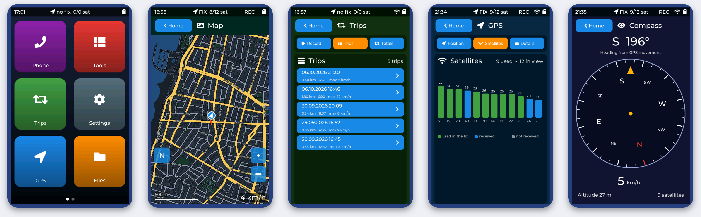

NAV-1
Pocket GPS navigator - install the firmware from your browser
Version 0.7.1 - ESP32-8048S043C-I board - about a minute
- Connect the board to the computer with a USB-C data cable.
- Click Install NAV-1 firmware, choose the serial port (
USB-SERIAL CH340) and confirm. - Wait until it says the installation is complete; the device restarts by itself.
- Insert a FAT32 microSD card, go outside and wait for the first GPS fix (a few minutes).
Your Wi-Fi settings and the files on the SD card are not touched. If the board is not found, install the CH340 USB driver.

Source code, build instructions and 3D-printable case on GitHub